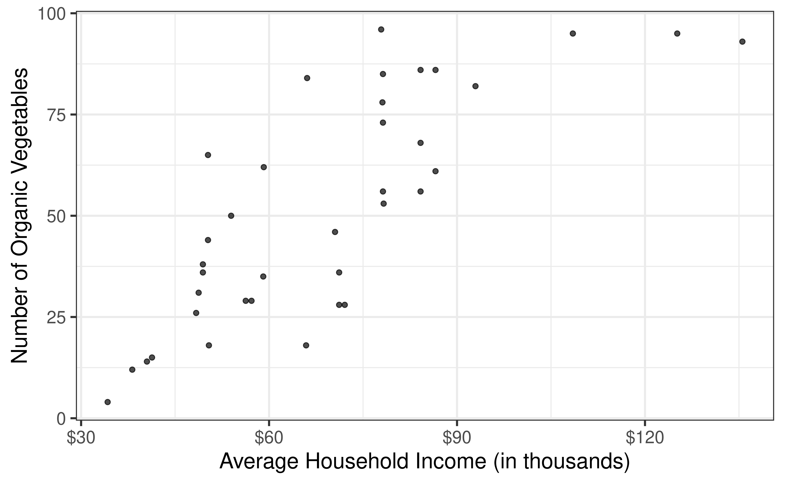
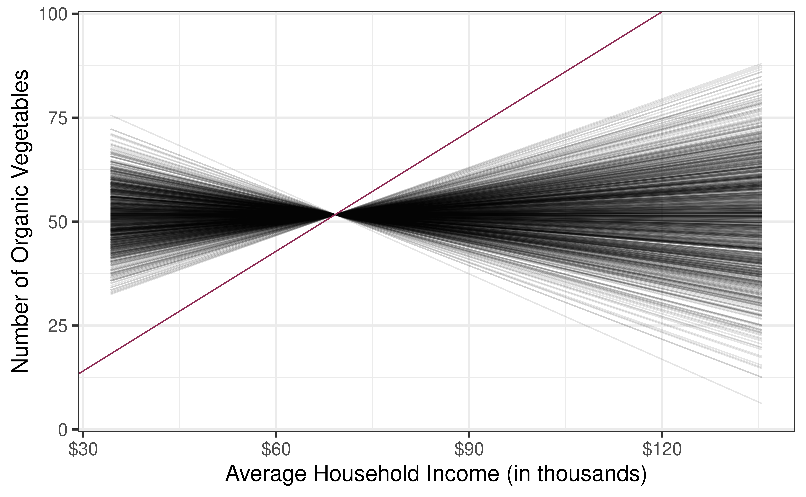
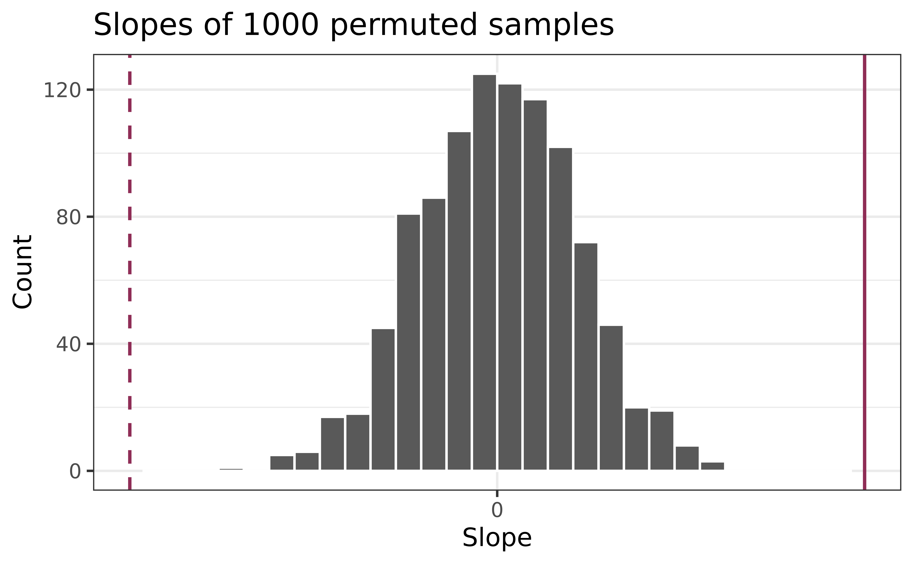
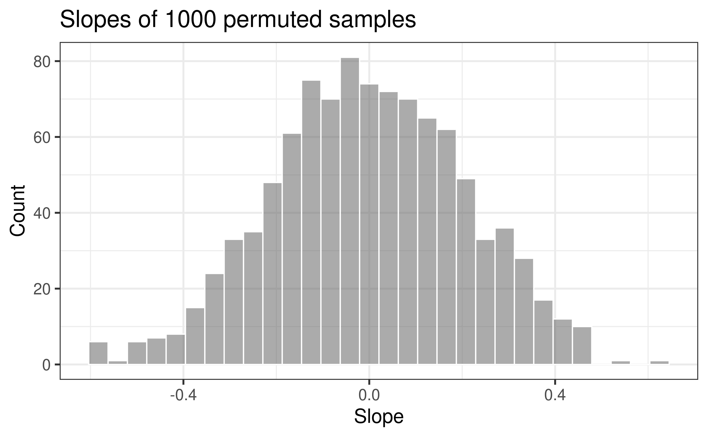
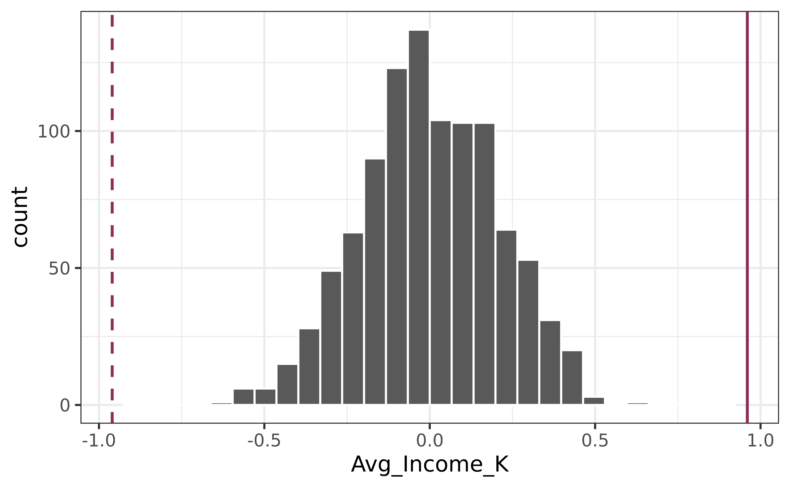

# load packages
library(tidyverse) # for data wrangling
library(ggformula) # for visualizing data
library(broom) # for nicely displaying models
library(mosaic) # for shuffling
library(scales) # for pretty axis labels
library(knitr) # for neatly formatted tables
library(kableExtra) # also for neatly formatted tables
# set default theme and larger font size for ggplot2
ggplot2::theme_set(ggplot2::theme_bw(base_size = 16))SLR: Hypothesis Testing for Slope
Simulation-Based Inference & Permutation Tests
Prof. Eric Friedlander
Application exercise
Complete Exercises 0-2.
Data: San Antonio Income & Organic Food Access
- Average household income (per zip code) and number of organic vegetable offerings in San Antonio, TX
- Data from HEB website, compiled by high school student Linda Saucedo, Fall 2019
- Source: Skew The Script
Goal: Use the average household income to understand variation in access to organic foods.
Computational setup
Exploratory data analysis
Code
heb <- read_csv(here::here("data/HEBIncome.csv")) |>
mutate(Avg_Income_K = Avg_Household_Income/1000)
gf_point(Number_Organic ~ Avg_Income_K, data = heb, alpha = 0.7) |>
gf_labs(
x = "Average Household Income (in thousands)",
y = "Number of Organic Vegetables",
) |>
gf_refine(scale_x_continuous(labels = label_dollar()))
Modeling
# A tibble: 2 × 5
term estimate std.error statistic p.value
<chr> <dbl> <dbl> <dbl> <dbl>
1 (Intercept) -14.7 9.30 -1.58 0.122
2 Avg_Income_K 0.959 0.128 7.50 0.00000000863- Intercept: HEBs in Zip Codes with an average household income of $0 are expected to have -14.72 organic vegetable options, on average.
- Is this interpretation useful?
- Slope: For each additional $1,000 in average household income, we expect the number of organic options available at nearby HEBs to increase by 0.96, on average.
From sample to population
For each additional $1,000 in average household income, we expect the number of organic options available at nearby HEBs to increase by 0.96, on average.
- Estimate is valid for the single sample of 37 HEBs
- What if we’re not interested quantifying the relationship between the household income and access to organic vegetables in this single sample?
- What if we want to say something about the relationship between these variables for all supermarkets in America?
Statistical inference
Statistical inference refers to ideas, methods, and tools for generalizing the single observed sample to make statements (inferences) about the population it comes from
For our inferences to be valid, the sample should be random and representative of the population we’re interested in
Sampling is natural

- When you taste a spoonful of soup and decide the spoonful you tasted isn’t salty enough, that’s exploratory analysis
- If you generalize and conclude that your entire soup needs salt, that’s an inference
- For your inference to be valid, the spoonful you tasted (the sample) needs to be representative of the entire pot (the population)
Inference for simple linear regression
Conduct a hypothesis test for the slope, \(\beta_1\)
Why not \(\beta_0\)?
We can but it isn’t super interesting typically
Calculate a confidence interval for the slope, \(\beta_1\)
What is a confidence interval?
What is a hypothesis test?
Research question and hypotheses
“Do the data provide sufficient evidence that \(\beta_1\) (the true slope for the population) is different from 0?”
Null hypothesis: there is no linear relationship between Number_Organic and Avg_Income_K
\[ H_0: \beta_1 = 0 \]
Alternative hypothesis: there is a linear relationship between Number_Organic and Avg_Income_K
\[ H_A: \beta_1 \ne 0 \]
Hypothesis testing as a court trial
- Null hypothesis, \(H_0\): Defendant is innocent
- Alternative hypothesis, \(H_A\): Defendant is guilty
- Present the evidence: Collect data
- Judge the evidence: “Could these data plausibly have happened by chance if the null hypothesis were true?”
- Yes: Fail to reject \(H_0\)
- No: Reject \(H_0\)
- Not guilty \(\neq\) innocent \(\implies\) why we say “fail to reject the null” rather than “accept the null”
Hypothesis testing framework
- Start with a null hypothesis, \(H_0\) that represents the status quo
- Set an alternative hypothesis, \(H_A\) that represents the research question, i.e. claim we’re testing
- Under the assumption that the null hypothesis is true, calculate a p-value (probability of getting outcome or outcome even more favorable to the alternative)
- if the test results suggest that the data do not provide convincing evidence for the alternative hypothesis, stick with the null hypothesis
- if they do, then reject the null hypothesis in favor of the alternative
- Complete Exercise 3.
Quantify the variability of the slope
for testing
- Two approaches:
- Via simulation
- Via mathematical models
- Use Randomization to quantify the variability of the slope for the purpose of testing, under the assumption that the null hypothesis is true:
- Simulate new samples from the original sample via permutation
- Fit models to each of the samples and estimate the slope
- Use features of the distribution of the permuted slopes to conduct a hypothesis test
Permutation, described
- Use permuting to simulate data under the assumption the null hypothesis is true and measure the natural variability in the data due to sampling, not due to variables being correlated
- Permute/shuffle response variable to eliminate any existing relationship with explanatory variable
- Each
Number_Organicvalue is randomly assigned to theAvg_Household_K, i.e.Number_OrganicandAvg_Household_Kare no longer matched for a given store
# A tibble: 37 × 3
Number_Organic_Original Number_Organic_Permuted Avg_Income_K
<dbl> <dbl> <dbl>
1 36 73 71.2
2 4 29 34.2
3 28 35 71.2
4 31 38 48.8
5 78 78 78.1
6 14 14 40.5
7 12 82 38.2
8 18 31 50.4
9 38 4 49.4
10 84 12 66.1
# ℹ 27 more rowsPermutation, visualized
- Each of the observed values for
Number_Organic(and forAvg_Income_K) exist in both the observed data plot as well as the permutedNumber_Organicplot - Permuting removes the relationship between
Number_OrganicandAvg_Income_K

Permutation, repeated
Repeated permutations allow for quantifying the variability in the slope under the condition that there is no linear relationship (i.e., that the null hypothesis is true)

Concluding the hypothesis test
Is the observed slope of \(\hat{\beta_1} = 0.96\) (or an even more extreme slope) a likely outcome under the null hypothesis that \(\beta = 0\)? What does this mean for our original question: “Do the data provide sufficient evidence that \(\beta_1\) (the true slope for the population) is different from 0?”

Regular Model
Shuffled Model
Call:
lm(formula = shuffle(Number_Organic) ~ Avg_Income_K, data = heb)
Coefficients:
(Intercept) Avg_Income_K
47.81030 0.05547 Complete Exercise 4.
Shuffling Multiple Times
Intercept Avg_Income_K sigma r.squared F numdf dendf .row
1 57.97025 -0.09135481 28.12859 0.0055955314 0.19694561 1 35 1
2 57.30557 -0.08174943 28.14435 0.0044807208 0.15753108 1 35 1
3 78.88384 -0.39358147 26.70265 0.1038598613 4.05639139 1 35 1
4 34.77489 0.24384626 27.63962 0.0398667352 1.45327298 1 35 1
5 63.98181 -0.17822909 27.90562 0.0212978431 0.76164592 1 35 1
6 54.06518 -0.03492175 28.19608 0.0008176556 0.02864136 1 35 1
7 56.05651 -0.06369898 28.16922 0.0027204663 0.09547606 1 35 1
8 47.74769 0.05637354 28.17755 0.0021307332 0.07473490 1 35 1
9 54.51019 -0.04135273 28.19144 0.0011465335 0.04017473 1 35 1
10 69.18595 -0.25343520 27.59357 0.0430637987 1.57506107 1 35 1
.index
1 1
2 2
3 3
4 4
5 5
6 6
7 7
8 8
9 9
10 10Generating the null distribution
Visualize the null distribution

Complete Exercises 5-7.
Reason around the p-value
In a world where there is no relationship between the number of organic food options and the nearby average household income (\(\beta_1 = 0\)), what is the probability that we observe a sample of 37 stores where the slope of the model predicting the number of organic options from average household income is 0.96 or even more extreme?

Compute the p-value
# A tibble: 2 × 5
term estimate std.error statistic p.value
<chr> <dbl> <dbl> <dbl> <dbl>
1 (Intercept) -14.7 9.30 -1.58 0.122
2 Avg_Income_K 0.959 0.128 7.50 0.00000000863# tally how many times simulated slopes are more extreme
tally(~ abs(null_dist$Avg_Income_K) >= abs(0.9591))abs(null_dist$Avg_Income_K) >= abs(0.9591)
TRUE FALSE
0 1000 # mean treats trues and falses like 1's and zeros (this is our p-value)
mean(abs(null_dist$Avg_Income_K) >= abs(0.9591))[1] 0Complete Exercises 8 and 9.
Recap
- Population: Complete set of observations of whatever we are studying, e.g., people, tweets, photographs, etc. (population size = \(N\))
- Sample: Subset of the population, ideally random and representative (sample size = \(n\))
- Sample statistic \(\ne\) population parameter, but if the sample is good, it can be a good estimate
- Permutation and refitting (using mosaic): Use repeated shuffling and model fitting to understand how sample statistics vary due to random chance, helping us extract meaning and information from data generated by random processes.
Recap Continued
- Testing: Conduct a hypothesis test
- Assume research question isn’t true (Null hypothesis)
- Ask what distribution of test statistic is if null is true
- Ask if your data would be unusual if under this null distribution
- P-value: Probability your data (or even stronger evidence) was obtained from null distribution